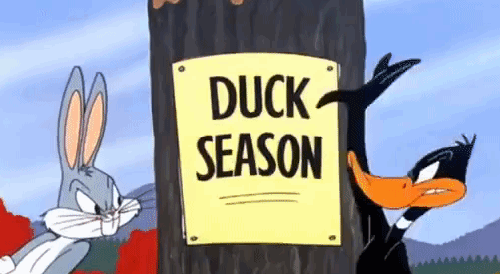
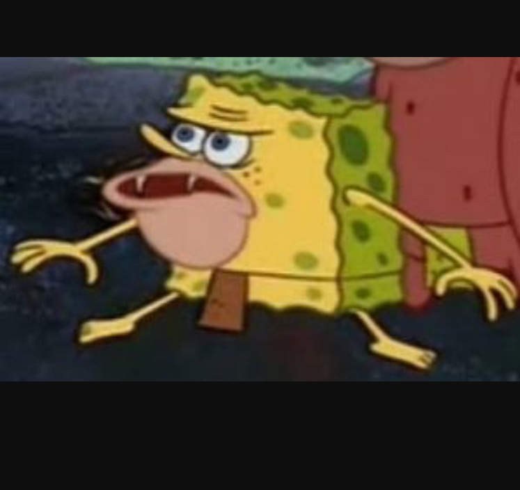

Goofy humor, czyli absurdalny i często przesadzony rodzaj komedii, swoje korzenie ma w klasycznych kreskówkach, takich jak Tom i Jerry oraz Looney Tunes. Te produkcje zapoczątkowały erę nieograniczonej wyobraźni, gdzie prawa fizyki były naginane, a postacie mogły przeżyć każdą katastrofę. Tom i Jerry przedstawiało niekończącą się rywalizację kota i myszy, pełną slapstickowego humoru, podczas gdy Looney Tunes wprowadziło barwną paletę postaci, takich jak Bugs Bunny, Daffy Duck czy Wile E. Coyote, które nieustannie wpadały w coraz to bardziej absurdalne sytuacje.
W latach 90. kino zaczęło eksperymentować z tym specyficznym rodzajem humoru, przenosząc go z animacji na wielki ekran. Przykładem tego jest kultowy film Maska (1994), w którym Jim Carrey wcielił się w postać Stana Ipkissa, przeciętnego mężczyzny, który po założeniu tajemniczej maski zmienia się w ekscentryczną i nieograniczoną prawami rzeczywistości postać. Film łączył elementy kreskówkowego humoru z efektami specjalnymi, co pozwoliło widzom doświadczyć żywego wcielenia kreskówkowego absurdu.
Goofy humor z kreskówek i filmów takich jak Maska miał ogromny wpływ na kształtowanie współczesnej komedii. Ten rodzaj humoru nie tylko bawi, ale również łamie konwencje i pozwala odbiorcom oderwać się od rzeczywistości. Stał się inspiracją dla wielu współczesnych twórców internetowych memów, wideo czy animacji, które często nawiązują do tej absurdalnej estetyki. To połączenie nonsensu, kreatywności i uniwersalności sprawia, że goofy humor jest ponadczasowy i ciągle żywy w różnych formach kultury.
